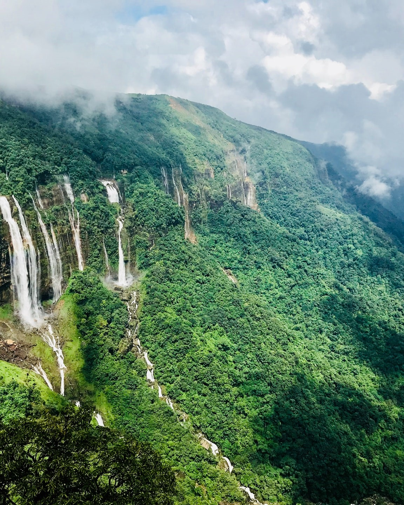

Srinagar, Jammu & Kashmir - The Paradise on Earth -
Famously known as 'Heaven on Earth', Srinagar is every bit the epitome of paradise on earth. As picturesque as the most stunning painting to ever be painted, Srinagar, the capital of Jammu and Kashmir, lies on the banks of the Jhelum river, and has a cool, pleasant climate all year round, contributing to the perpetual influx of tourists visiting this city which offers a plethora of gorgeous scenic vistas.
02
Munnar, Kerala - Tea Gardens, Lakes and Pretty little hill-station
The idyllic hill station Munnar - famous for its tea estates, exotic lush greenery and craggy peaks, is located in the Western Ghats and is one of the best places to visit in Kerala. It serves as the commercial centre for some of the world's largest tea estates. In addition, Munnar has many protected areas which are home to endemic and highly endangered species like the Nilgiri Thar and the Neelakurinji.
03
Andaman & Nicobar Islands - Blue seas, virgin islands and colonial past -
Lagoons of crystal clear water and scenic beaches topped with a little bit of history make Andaman and Nicobar one of the most perfect choices for an enjoyable, laid-back holiday where you can go on long treks, laze around in the backwaters of the island, or if you're feeling a little more adventurous, even go for a bit of deep sea diving. From the pristine, untouched beaches of Neil and Havelock Islands to the bustling town of Port Blair, the Andamans have something to offer to every tourist.
04
Jaisalmer, Rajasthan - The Golden City
Situated close to the Pakistan Border, Jaisalmer is a major tourist spot located in the northwestern state of Rajasthan in India. It is called the 'golden city' due to its bounteous golden dunes flowing in the Thar Desert. Jaisalmer is adorned with lakes, ornate Jain temples, havelis and castles clad in golden yellowish sandstone. Climb on to the camel saddle and make your way through this desert or camp under the night sky in this golden land for an unforgettable experience.
05
Darjeeling, West Bengal - Queen of The Himalayas-
Jaw-dropping locales, mesmerising sunrises, the untouched beauty of the hills, the old-world charm of the past, and the welcoming smiles of the local people all add up to make Darjeeling one of the most beautiful hill stations in Eastern part of India. Spread over a steep mountain ridge, Darjeeling is nestled amidst acres of lush green tea plantations boasting of cool climes all year round. This hill station is the perfect getaway for a romantic honeymoon and is just around 700 kilometres away from Kolkata.
06
Gangtok, Sikkim - The Gateway to Sikkim
Extremely alluring, pleasantly boisterous and wreathed in clouds - Gangtok, the capital city of the Sikkim can also give you a spectacular view of Mt. Kanchenjunga, at a distant skyline. The pristine hill station nestled in mountains and clouds is also a base for a whole lot of trekkers to the Himalayan mountain ranges. The mesmerising prismatic beauty and the beautiful winding hill roads are even more breathtaking if seen from a bird’s eye view in a cable car.
07
Shillong, Meghalaya - Scotland of the East
A beautiful city encircled by pine trees, Shillong is the capital of Meghalaya. Known as the 'Scotland of the East', it derives its name from Lei Shyllong, an idol worshipped at the Shillong Peak. Standing as tall as 1496 meters, Shillong provides a relief from the heat across the country. The light drizzles and the cooling gentle wind adds to the joy of visiting this hill station. One can find descendants of the Khyrim, Mylliem, Maharam, Mallaisohmat, Bhowal and Langrim tribes.

08
Manali, Himachal Pradesh - Lover's Paradise - India's Honeymoon Capital
Nestled in between the snow-capped slopes of the Pir Panjal and the Dhauladhar ranges, Manali is one of the most popular hill stations in the country. With jaw-dropping views, lush green forests, sprawling meadows carpeted with flowers, gushing blue streams, a perpetual fairy-tale like mist lingering in the air, and a persistent fragrance of pines and freshness - Manali has been blessed with extraordinary scenic beauty.
09
Udaipur, Rajasthan - The City of Lakes
Udaipur, also known as the City of Lakes, is the crown jewel of the state of Rajasthan. It is surrounded by the beautiful Aravalli Hills in all directions, making this city as lovely as it is. This 'Venice of the East' has an abundance of natural beauty, mesmerising temples and breathtaking architecture which makes it a must-visit destination in India. A boat ride through the serene waters of Lake Pichola will be enough to prove to you why Udaipur is the pride of Rajasthan.
10
Jaipur, Rajasthan - The Pink City
Jaipur is a vibrant amalgamation of the old and the new highly urbanized pockets and shopping areas have casually sprung up beside gleaming forts and palaces. Jaipur has long been one of the shiniest cultural jewels in the history of the Indian subcontinent, and the royal corridors of the famously named 'Pink City' offer up a plethora of adventures and activities that make for a memorable holiday experience.
11
Varanasi, Uttar Pradesh - The Spiritual Capital of India
A city as old as time itself. A city that has stayed in place and watched as the world has turned and the tides have changed. A city that has stood the test of time for thousands of years. Varanasi, the city that is more than just the spiritual capital of India. The city which can be aptly described as a melting pot where both life and death come together. The city that you only need to visit once for it to stay with you forever.